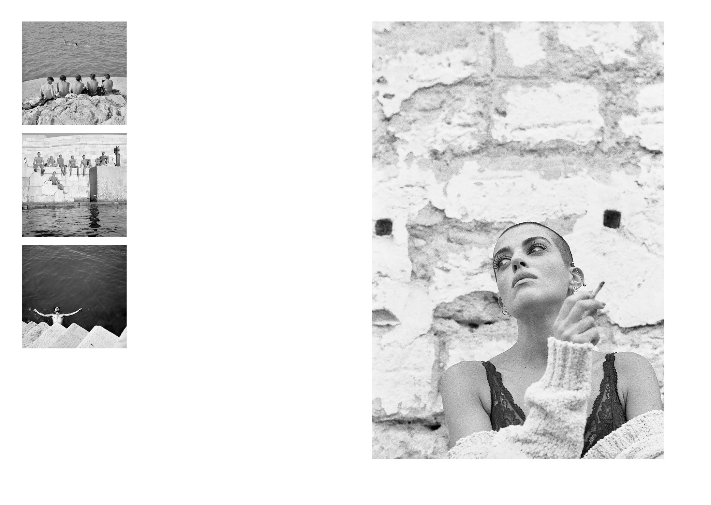
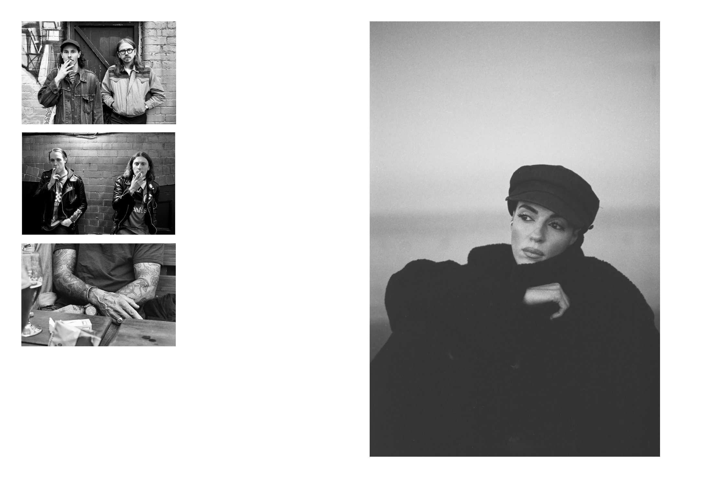
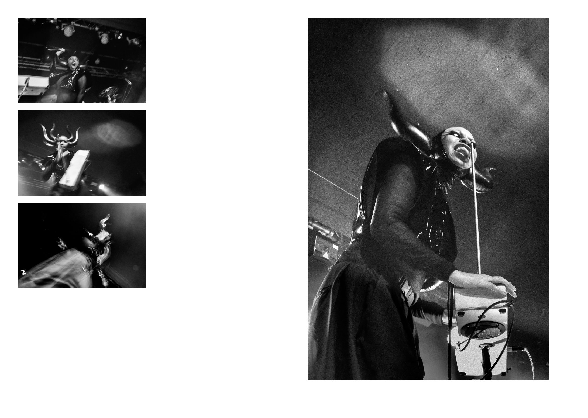
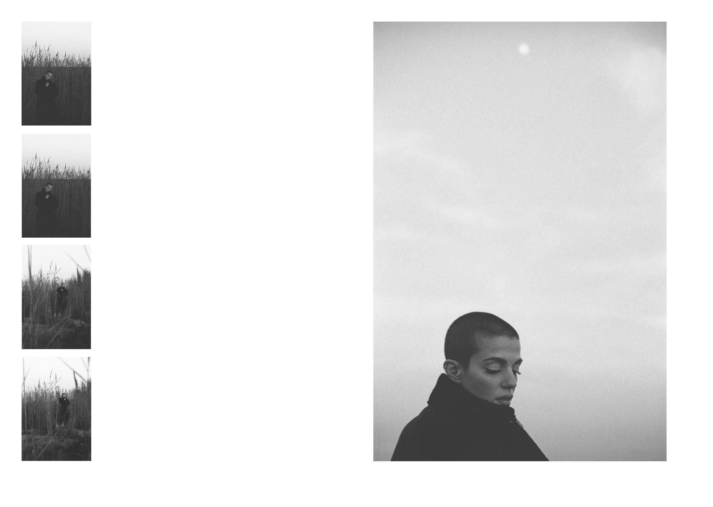
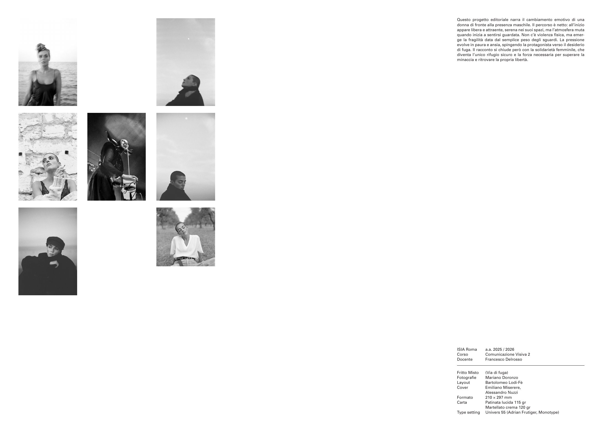

Fritto Misto
41 fanzines by students of ISIA Rome, all born from a single archive of 180 photographs by Mariano Doronzo.

The project
An exhibition project conceived by Francesco Delrosso: from a shared archive come 41 independent narratives, sharing the same visual material but developed through separate editorial processes. Between Italy and England, Doronzo’s images bring everyday and marginal stories back to the centre. The result is a varied set of viewpoints, in which the archive is not a closed whole but an open space of narrative possibilities.
Via di Fuga
My fanzine.
It tells the emotional change of a woman faced with a male presence. At first she seems free and at ease in her own spaces, but the mood shifts when she begins to feel watched. There is no physical violence: what emerges is the fragility caused by the weight of other people’s gaze, which turns into fear and a wish to escape. The story ends with female solidarity, the only safe refuge and the strength to win back her freedom.


The fanzine
Every page of Via di Fuga, from front to back cover. Click to enlarge.








